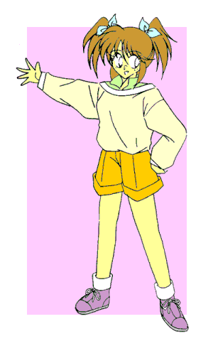
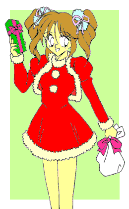
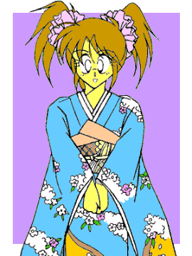
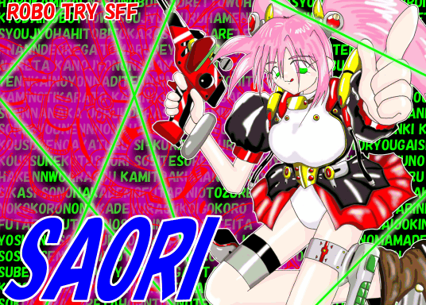
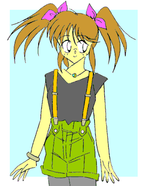

――萌え燃えっ！ 白塁学園高校女子ロボＴＲＹ部 ＥＸ−Ｓ――
さおりん歳時記 ・・・の続き（笑）
ＣＲＥＡＴＥＤ ＢＹ ＭＯＮＤＯ
（special thanks！ 角さん）

この『さおりん歳時記……の続き（笑）』は、少年少女文庫第二掲示板に書き込んだ『ロボトラ』のショートショートをひとつにまとめたものです。
なお、前作の『さおりん歳時記』は、右のイラストをクリックすると見ることができます。
未読の方は、まずそちらからご覧ください。
11月 『おめざめさおりんっ（ＴＡＫＥ−２）』
ブラインドの隙間からさし込む朝日。
目ざまし時計の電子音。
「ん……んんっ…………んわわっ――」
寝ぼけまなこをこすり、ゆっくりと伸びをして……
「ひゃっ!!」
ぷるんと揺れた自分の胸に驚いて、あわててそれをかき抱く。
「あ、そうか。今、女の子なんだっけ……」
……進歩のない奴（笑）。
「…………」
大きなお世話だ――と口の中でつぶやき、甲介……いや沙織はベッドの上で身を起こした。
今日は日曜日。……でも、「二度寝」するには時間が中途半端だ。
小さくなった手のひらで、そっと胸の膨らみを包み込む。
男の自分に本来あるはずのない、女の子の胸。
長く伸びた髪、ふっくらと丸みを帯びた両肩とお尻、そしてフラットになった股間――
「よしっ、今日は一日このまま “沙織”
でいこうっ」
そう言うと、沙織（甲介）は弾みをつけて布団からとび起きた。
ベッドの脇に立ち、背筋を伸ばす。
「ん…………んっ……あ〜、あ〜、ん……あ〜、ああ、あ〜っ…………」
胸元に手を当て、意識して声を作る。
「…………あ、あ……あた、あた、あ……あたし――っ、…………きゃっ♪」
突然わざとらしく身をすくめて甲高い悲鳴を上げ、沙織はクスッと笑みを浮かべた。
「ふふっ。さあ、がんばらなくっちゃ！ ……今からあたしは、女の子っ♪」
なりきりモード、発動！！
でもいまいち顔が赤いぞ、沙織（笑）。
12月 『サンタクロース・イズ・カミング・トウ・さおりん』
じんぐるべ〜るっじんぐるべ〜るっすっずっが〜鳴る〜っ♪ ……てな具合にクリスマス一色な駅前の商店街。
「う〜っさぶさぶっ。……あ、いらっしゃいませ〜っ。特製クリスマスケーキいかがですか〜っ」

１月 『禁断の鍋奉行』
「あああ〜っけましてえっ、おおお〜めでとうであああああ〜るっ！」
ずとおおおおおおんっ――！！
「…………」
新年早々眼前に仁王立ちする筋肉ダルマを見やって、正輝少年は椅子に座ったまま口元をひくひくと引きつらせた。
初詣の帰り道、なんの脈絡もなくいきなりアブダクト（笑）されてしまったのだ。
「…………」
目の前の丸いテーブルには、何故か巨大な鍋が置かれている。
中では火山の溶岩みたいな真っ赤なスープが、ぐらぐらと煮えたぎっていた。
中華料理の『火鍋』……らしい。
「しょおおおねんっ、お〜ぬしが去年何故飯綱こ〜すけに負〜けたのか分かるかっ！？ ……そうっ、それはおぬしにスっタミナが足〜りなかったからであああああ〜るっ！！」
「…………」
違う――とは言えなかった。
得意の屁理屈もマジギレも、“ヒトの話を聞かない”
この筋肉ダルマには全く通じない。
「試〜合中に貧血起〜こして倒れるなど、男としてげんごど〜だんでああああ〜るっ！！ そ〜こでっ、新たなる年の始めにっ、我々元祖ロボＴＲＹ部名物『ファイヤー男鍋』をお年玉代わりに振〜る舞ってやろうっ！ ……こ〜ころして食すがいいっ！！」
「「いえっ、さ〜っ！！」」
「…………」
おとそで完全にデキ上がっているマッチョマンたちを上目づかいに見る正輝。
「さああど〜したっ、え〜んりょするでなあああいっ！」
おそらく悪気はこれっぽっちもないのだろう。しかし大きなお世話であった。
ぎろり――とにらまれ、正輝はしぶしぶ鍋の中身にハシをつける。
だが、
「うぐっ…………むぐぐっ！！」
辛い。とことん辛いっ。
あまりの辛さに三半規管がマヒし、鼻血があふれそうになる。
今朝食べたお雑煮やおせちの味が、忘却の彼方へと消えていく……。
「どおおお〜した少年っ。熱いとか辛いとかで口に入れたものを戻すのは幼〜稚園児のすることだぞ〜っ！」
そう言われて、子ども扱いを死ぬほど嫌う正輝はそれを無理矢理飲み込んだ。
「よおおお〜しっ。……さあ〜っどんどん食べてつ〜よくなれっ！ そ〜して明日（あす）の輝くロボトラのほ〜しとなれいっ！！」
しかし、その前に昇天して “お星さま”
になりそうな味である（笑）。
「お〜やち〜っともハシが進んどらんではな〜いかっ。やはり好〜き嫌いの多いお子ちゃまにはこの味はは〜や過ぎたかＨＡＨＡＨＡ〜っ」
「……！！」
瞬間、正輝の頭の中にある『負けず嫌い回路』がＯＮになった。
がぼっ、と鍋の中身をお碗に目一杯すくい上げると、少年はヤケクソ気味にがっつき始めた。
知らずに口にしているが、今食べたのは珍味・サルの〇〇〇である（笑）。
――くそくそくそおっ！ これもみんな…………みんな飯綱甲介、あ・い・つのせいだあああっ！！

２月 『オトコたちの挽歌』
二月某日、沙織が三丁目のコンビニでチョコレートを買っていた……
「ふんっ、て〜きに塩を贈るとはっ、な〜かなか味なマネをす〜るではないか特攻娘よっ！ ち〜なみにわたしはミルクよりもっ、ビターて〜いすとが好みであああ〜るっ！！」（女美川武尊・談）
「たとえ洗脳されていてもっ……そうっ、バレンタインに対する女の子の気持ちまでは消せないぞっ！ さあこい文月沙織っ！！ ちなみにボクは手作りだとかハート型とかにはちっともこだわっていないぞっ」（女美川ヤマト・談）
「は？ なに言ってるんだ？ あたまバグってるのかきしょいぞおまえらっ。ちなみにボクはあまいものは大っキライだけど、どうしてもうけとってほしいというのならもらってやってもいいぞっ、沙織っ」（出海正輝・談）
……………………………………………………………………………………
「……痴れ者どもめ。沙織がチョコを渡すといったら、ワシ以外の誰がいると言うのぢゃっ」
メガパペットを持ち出し三つ巴のドツキ合いを繰り広げるオトコたちを横目に、余裕綽々でほうじ茶をすするお師匠であった。
「う〜ん…………やっぱこれにしよっと♪」
さんざん迷った挙げ句、ほのかは一番最初に目をつけていた抹茶チョコの箱を手にレジへと向かった。
「あ……あのさ、もしかして、それ、こ……甲、介、くん、に？」
「まあね〜っ。こんなものでも一応あげないと、ひがむし……」
「そ……そうなんだ、こ、甲介、くんにあげるんだ――」
悪態つきながらも照れたように笑みを浮かべて目をそらすほのかに、沙織（甲介）はくるっと背を向け、「よっしゃあああっ」と両の手を握りしめ……そしてそんな自分に顔を赤らめると、誤魔化すようにセキ払いをした。
「…………」
毎年毎年この時期にチョコを「もらえる」「もらえない」で一喜一憂する――
――男って、つくづくアホな生き物だよな……
かく言う自分も、その「アホな生き物」のひとりである。……今は違うけど（笑）。
「ところで沙織ちゃんは、チョコ買わないの？」
「へっ！？ オレ……と、あ、あた、あたしが？」
ほのかに問い返され、沙織は思わず答えに詰まる。「べべ、別に、あ、あげるヒトなんかいないし……」
こないだ買ったチョコは、単に自分が食べたかっただけである。
なんのことはない。バレンタインシーズンだから男の姿では買いにくかったのだ（おいおい）。
「そう？ でも甲介の奴にはともかく、てっきりお師匠様にはチョコあげるんだと思ってたけど……」
「あ……」
忘れてた……。

special edition 『まっする・ばれんたいん』
「……♪」
「バレンタイン・フェア」と店先に書かれた洋菓子屋から、ひとりの少女が軽やかな足取りで外に出てきた。
年の頃は１３、４歳。チェックのプリーツに、赤いダッフルコート。
胸元には丁寧にラッピングされたチョコレートの箱を大事そうに抱えている。
彼女の名は森川萌奈（もりかわ・もえな）。私立緑山中学の２年生。
しかし、ほんの三ヶ月前までは彼女、いや彼は酢藤優作（すどう・ゆうさく）という男子大学生だった……
……そう、交通事故にあって即死したはずの俺は、感電のショックで昏睡状態に陥っていた（らしい）少女、萌奈として目覚めた。
死んだ人間が別人の身体で生き返る……しかし、どうしてそんなことが起こったのかは、全く分からない。
だけどそれ以来、俺は「萌奈ちゃん」として、彼女のふりをして暮らしている。
元の両親は郷里に引き込んでしまった。連絡をつけようとも思ったが、そうすると今度は、我が子が元気になって喜んでいる萌奈ちゃんの両親の心を傷つけてしまいかねない。
秘密を知っているのは、大学の友人である水野俊也（みずの・としや）ただひとり。彼は俺――萌奈ちゃんの家庭教師として、少女の身体と生活に戸惑う俺の良き相談相手になってくれた。
そしてその頃から、俺は自分の心が
“変わって” いくのに気づき始めた……
優しくしてくれる萌奈ちゃんの両親を「パパ」「ママ」と呼んでいるうちに、本当の家族のように思えるようになってきた。
クラスの女の子たちと気軽に話せるようになっていくにつれて、男の子と話す時には知らず知らずのうちに身構えてしまうようにもなった。
そして、俊也と一緒にいると妙にドキドキして、それでいてなんだか嬉しくなってしまうようになった。
きっと「女の子」として、俊也のことを意識するようになったのだろう。
今手にしているバレンタインのチョコも、彼にプレゼントするため買ったものだ。
どのみち元の、酢藤優作には戻れない。……そうだ、もう自分のことを
“俺” というのはよそう。
今の「あたし」は萌奈という、女の子なのだから……
どっごおおおおおおお〜んっ！！ 「……そうはいかんぞＴＳ少女っ！！」
なんということでしょう。
そんな彼女の目の前に、なんの脈絡もなく五つの筋肉が降臨するのです。（ナレーション：増〇 弘）
「灼熱の胸筋っ！ ニクレッドっ！！」
「孤高の腹筋っ！ ニクイエローっ！！」
「怒濤の三角筋っ！ ニクブルーっ！！」
「鋼の上腕二頭筋っ！ ニクブラックっ！！」
「麗しの僧帽筋っ！ ニクホワイトっ！！」（←念のため言っときます。野郎です）
「……歪んだ性別あるところっ、正義の男魂（おとこん）ありっ！ で、あああああ〜るっ！！」
どう見たって某部長なレッドの人が、胸に手を当て見得を切る。
「「まっする戦隊っ、ニクレンジャーっ！！」」「……であ〜るっ！！」
まっするスメルがあたり一面に立ちこめる。
いきなりな展開に、その場にいた全ての人間のお脳がフリーズした……（笑）。
「まっするバズーカっであああ〜るっ！！」
どがっと空中に出現する、怪しげな大砲。
「男、還元っ！ ファイヤああああっであああああ〜るっ！！」
恐怖に腰を抜かしてあとずさるＴＳ少女に照準を合わせ、雄叫びを上げるレッドの人。
次の瞬間、毒々しい色のビームが砲口から放たれ、彼女を直撃するっ！！
「きっ――ぎゃああああおあおおおおおお〜っ！！」
甲高い悲鳴が、野太い胴間声に置き換わるっ！
胸の膨らみが押しつぶされ、固い筋肉に鎧われるっ！
細かった手足が、めきめきと太くなっていくっ！
肩の肉が盛り上がり、首筋がそこへ埋没していくっ！
艶やかな髪が全て抜け落ち、エラがいかつく張り出し、のどぼとけが迫り出し、目元が落ちくぼむっ！
眉毛がごわごわになり、手の甲にみっしりと毛が生えるっ！
プリーツスカートとショーツを突き破り、股間から巨大な×××が雄々しく屹立するっ！
パンプアップしていく肉体に着ていた服が内側から引き裂かれ、柔らかな身体の線がごつごつと変化していくっ！
そしてＴＳ少女は瞬く間に、元の男の姿とは似ても似つかぬおっさん顔のマッチョな巨漢へと変貌するっ……
……と思ったら、ビームの軸線上になんの脈絡もなく通りすがりの通行人Ａ（３８歳、独身男性）がっ！
「うっ……うおおおおおおおお〜っ！！」
ＴＳ少女の目前でビームを浴び、むきむきと膨れ上がってあっという間にまっするな身体と化す、通りすがりの通行人Ａ（３８歳、独身男性）。
もちろん着ていた服は、内側から引きちぎられてすっぽんぽん。
「ひっ……ひいいいいいいいい〜っ！！」
世にもおぞましいその光景に、「ムンクの『叫び』」状態で失神するＴＳ少女。
そんな彼女を尻目に通りすがりの通行人Ａ（３８歳、独身男性）は「ふんぬっ！」と筋肉誇示ポーズを取り、その顔に取ってつけたようなビルダー笑いを浮かべた。
「もう貧弱なボウヤとは呼ばせないっ。……だあありゃっしゃああああああっ！！」
今ここに、新たな筋肉の戦士が誕生しました。
その名も、「鮮烈の大腿筋 ニクシルバー」っ！！（ナレーション：増〇 弘）
レッドの人と目と目を合わせ、うなずき合う通りすがりの通行人Ａ（３８歳、独身男性）。
がしっ……と力強く握手を交わし、そして彼らは二列縦隊を組むと、夕日に向かって走り去っていくのであった。
ありがとう通りすがりの通行人Ａ（３８歳、独身男性）っ。
きみの尊い犠牲で、ひとりのＴＳ少女が救われたのだっ！
……すっぽんぽんだけど。
― 完 ―
「…………という話を『少年少女文庫』に投稿しようと思うんだけど……」
「あんた、血見るわよマジで……」
「ははは……」
チョコを物色しながら謎の漫才（？）を繰り広げる舞香とかなめに、沙織（甲介）は顔面にタテ線入れながら乾いた笑い声を上げるのであった。
３月 『魔法のお菓子で根性試し♪』
る〜る〜るるる〜。る〜る〜るるる〜。
あんまり「る〜るる」するものだから、物影からキタキツネが顔を出し、由〇さおりが『夜明けのス〇ャット』を歌いながら通り過ぎていった……。
「これがほんとの “さおり”
つながり…………って、そういう問題じゃなあああああいっ！」
今年は予想以上にバレンタインチョコをもらうことができた。
しかし、そのほとんどが「沙織ちゃんに」なんて書いてあったため、甲介としては複雑なものがある。
――うううっ、主人公なのに主役なのに……っ。
おまけにほのかの前で別の女の子にチョコ渡されたため、一週間ほど口きいてもらえなかったとか。
「ふむっ、これで全員分かの……」
毎年この時期は、出費がかさむのう……と、バレンタインデーに何ももらえなかった男たちが聞けば憎悪に身悶えしそうな台詞をつぶやきながら、お師匠はお返し用に買ったプレゼントの数をかぞえていた。
「それにしても沙織――いや甲介の奴め、『バレンタインデーはずっと男の姿でいてたから』などと屁理屈をこねおってからに……」

おしまい
ＭＯＮＤＯです。
ヤマトくん主役の『ロボトラＥＸ−４』の執筆（笑）に煮詰まってしまい、先に『歳時記』の続きをまとめてみました。
これで一年間をコンプリートしたわけですが、我ながらよくもまあいろいろ思いついたものです。
特に３月、第二掲示板とは全く別のお話になってしまいましたが、『ハリポタ』ネタは以前から使ってみたかったので、今回実験的（？）に組み込んでみました。
う〜ん、ちょっとオチが弱かったですか……？ 百味ビーンズにガラムマサラ味があるかどうかは分かりませんが、カレー味なんかがあるくらいですから、多分あるでしょう（笑）。
次は、クィディッチ（魔法の箒で縦横無尽に空を駆け回りながらボールを奪い合う競技）でもやってもらいましょうか。
甲介：「おい……っ」
イラストの掲載を快諾してくださった角さんに、改めてお礼を申し上げます。
キュートなコスチュームをデザインしていただいて、本当にありがとうございました。
それでは、また。
２００２．７．２０ アブト〇ニック（筋肉収縮ベルト）を衝動買いしてしまった、ＭＯＮＤＯ
□ 感想はこちらに □